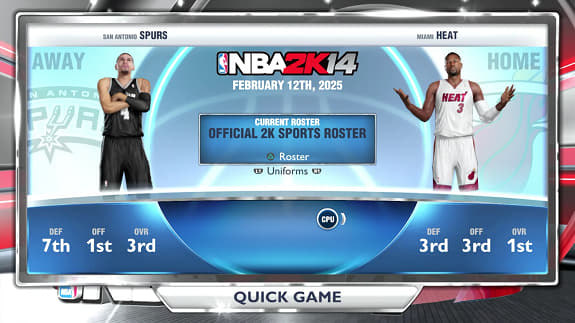

卡頓問題
遊戲會連線到 2K 伺服器，但已經關閉了，導致一直檢查，造成遊戲卡頓，極低的幀數無法正常玩遊戲。
解決辦法是修改伺服器的 IP 位址為本機！在 C:\Windows\System32\drivers\etc 找到 hosts 檔案，將存取權限修改為使用者可以讀寫，然後用記事本之類的純文字編輯器開啟，寫入：
127.0.0.1 nba2k13.pc.2ksports.com ns.take2games.com
還是無法解決卡頓問題的話，可能是 DNS 快取依然舊 IP 的問題，清除一下就好。開啟命令提示字元，輸入：
ipconfig /flushdns
跟 PlayStation 4 的 NBA 2K14 是畫質大幅提升的次世代新作不一樣，Windows 版 NBA 2K14 其實是 NBA 2K13 換皮遊戲，因此也有同樣卡頓的問題，可以用上面的方式解決，但是要把 nba2k13.pc.2ksports.com 改成 nba2k14.pc.2ksports.com。

PS4 版 NBA 2K14 其實長這樣，跟 Windows 版不一樣對吧